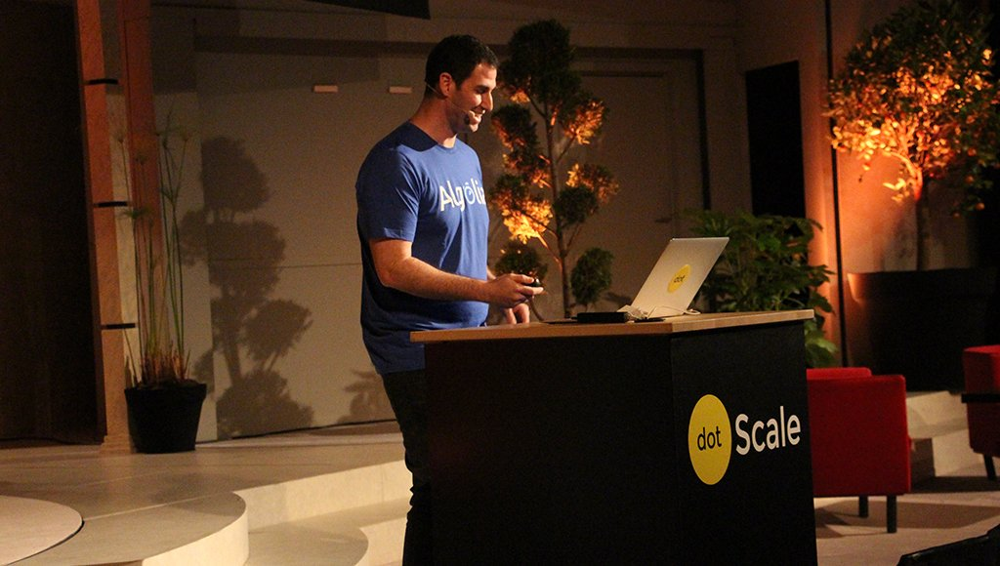
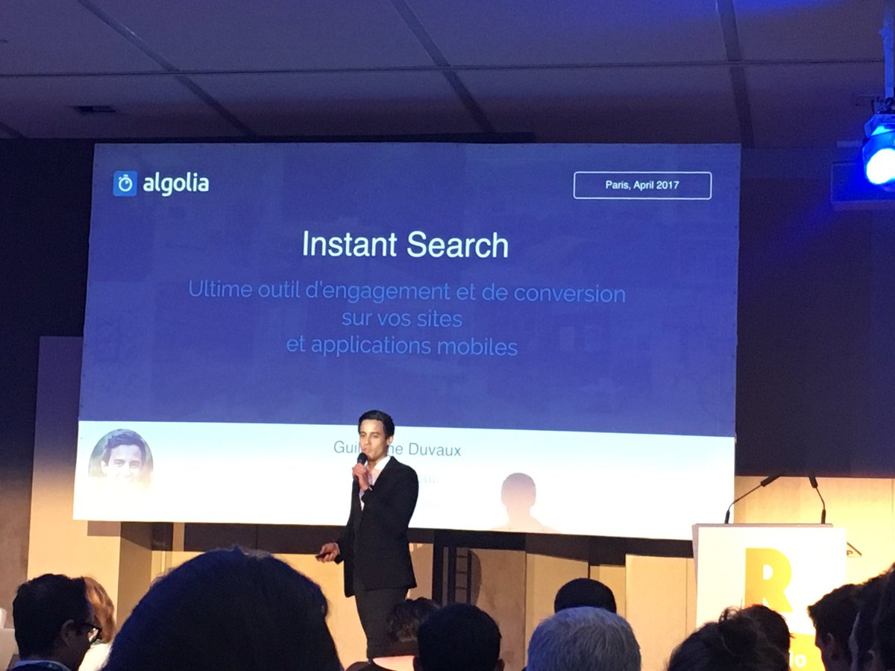
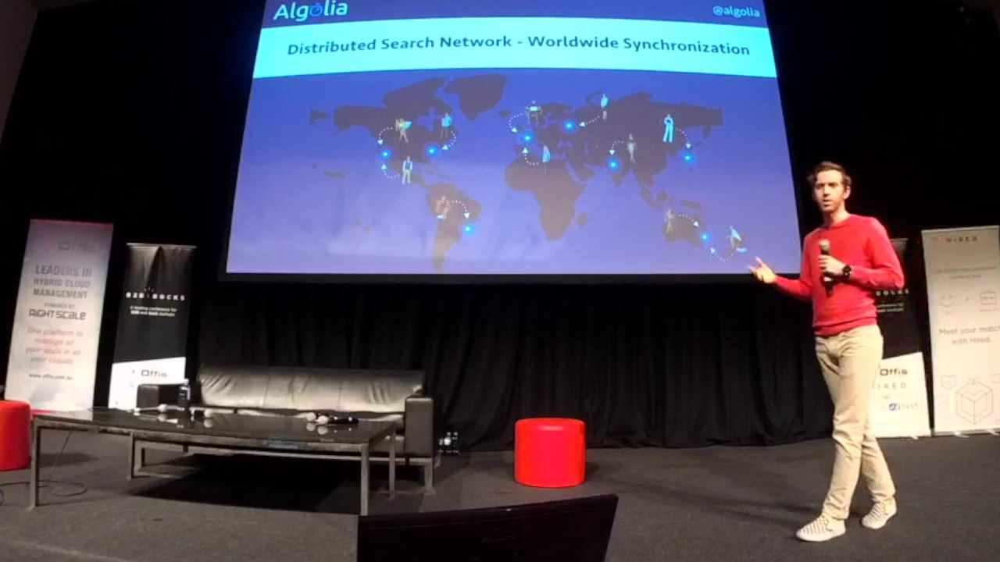
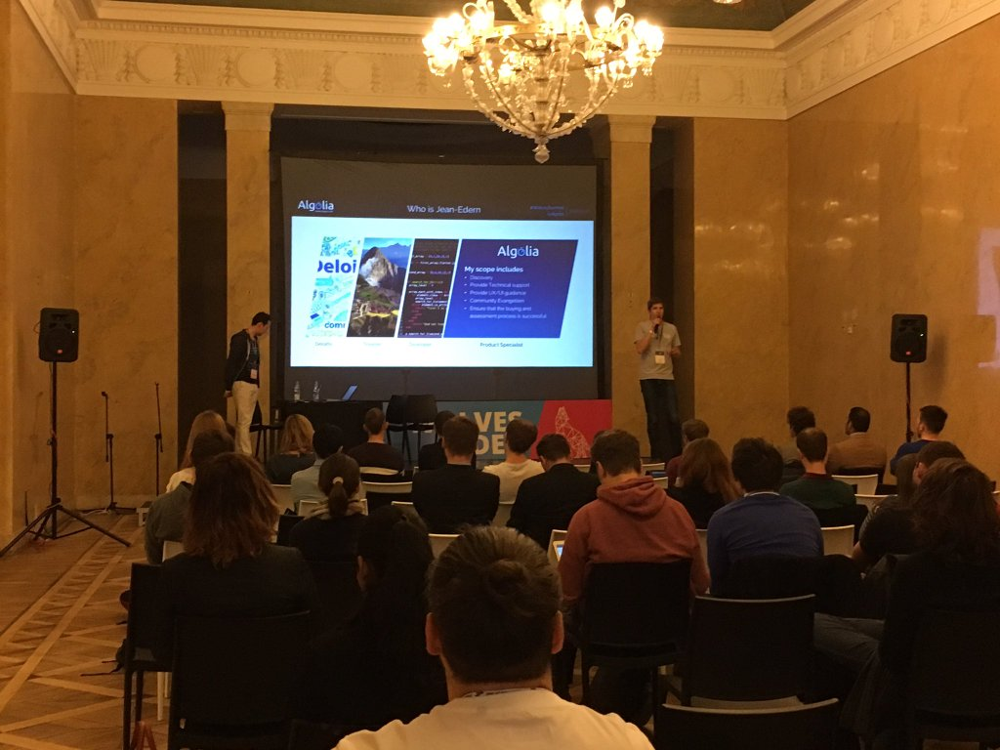
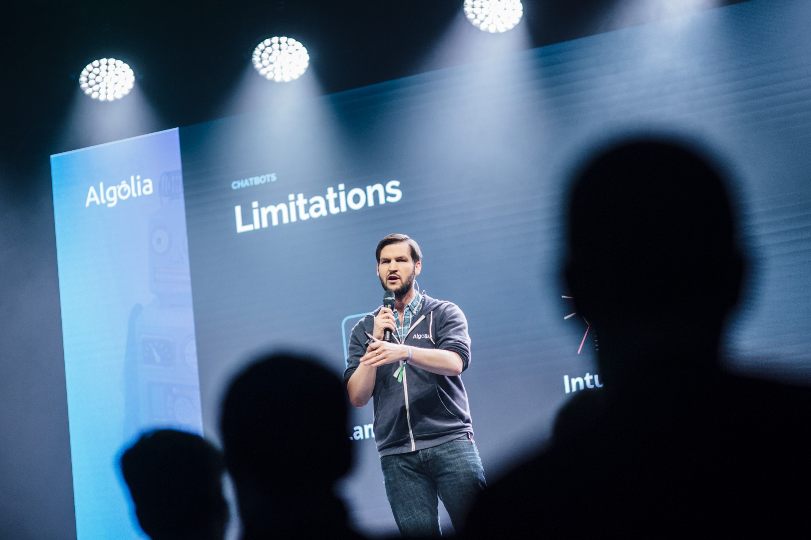
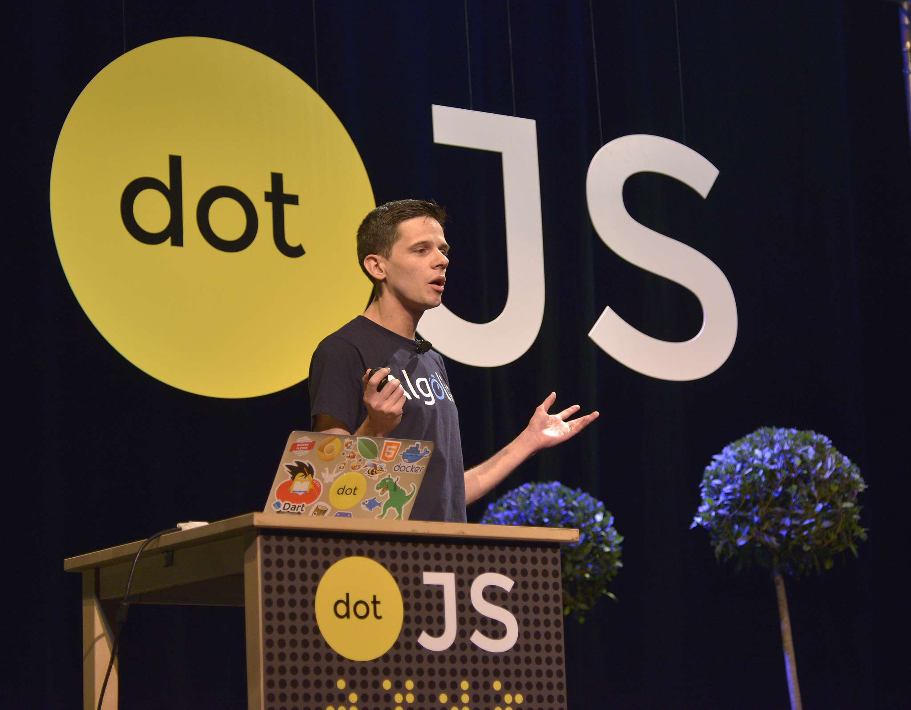
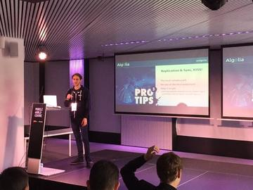
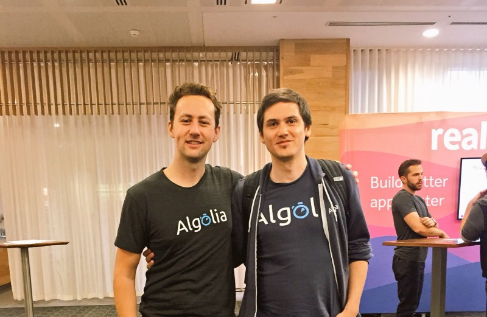
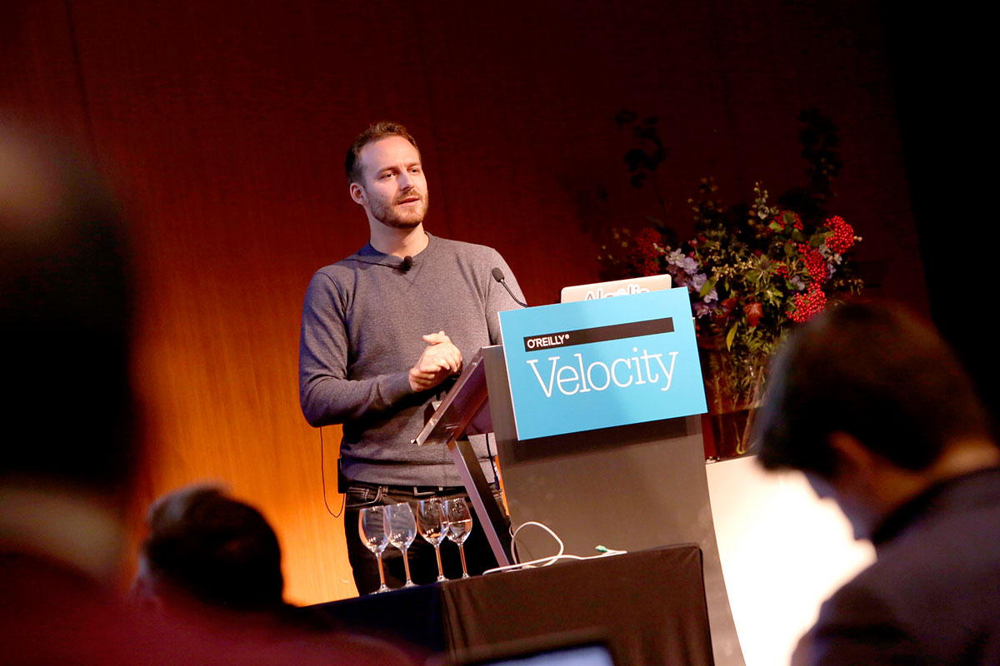
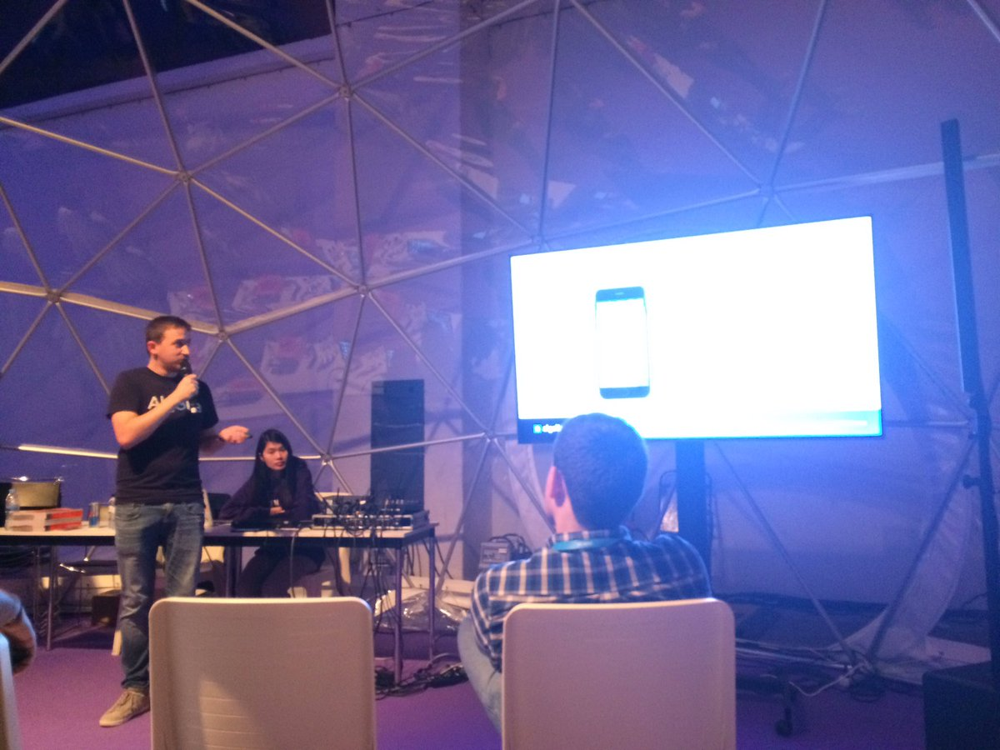
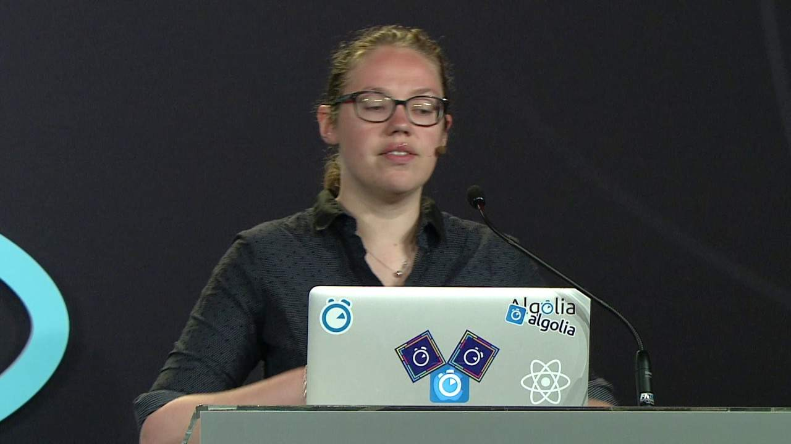
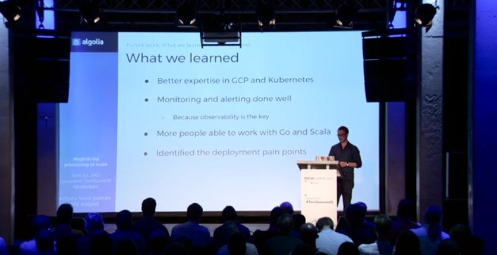
How to become a public speaker
Tim Carry
@pixelastic

Common blockers
- I have nothing to say
- I don't know of any conference
- I don't know how to make slides
- I have stage fright
Why should I talk?
"I'm a developer. I don't
talk
to people."Main reasons
- To share
- To learn
- For your career
From here to there
Casual
Informal discussions at the office
Internal
Presentation to a group of coworkers
Local
Talk at an outside meetup
National
Official talk at a paid conference
International
Travelling to several countries
Professional
Keynote level
What can I talk about?
"Me? I have nothing interesting to say."
You
have
things to sayKill that little voice in your head...
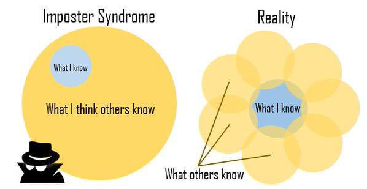
You're
always
right when sharing your
experienceFollowing the curve
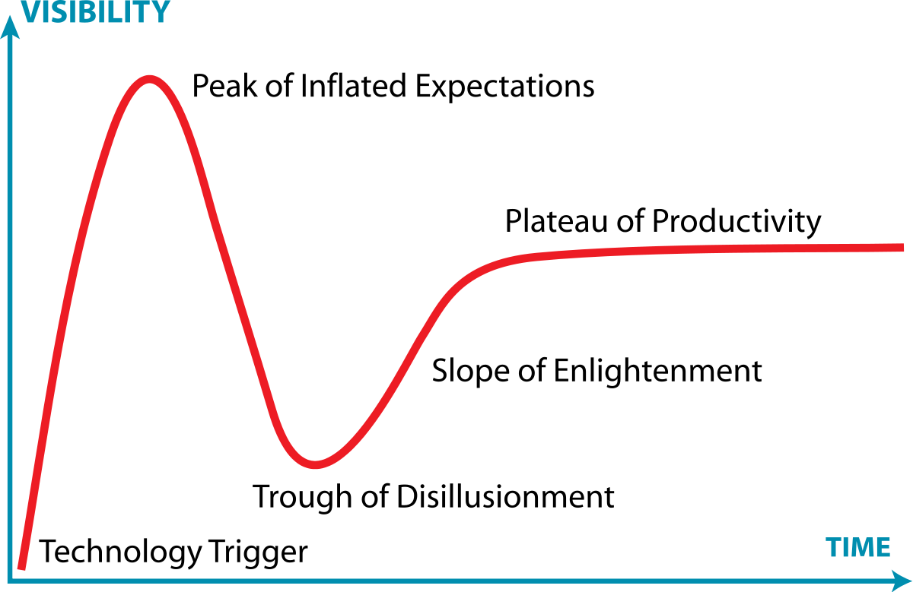
Peak of Inflated Expectations:
Shiny new tech. Hacks. Side-projects
Through of Disillusionment:
Stories from the trenches. Post-mortem.
Slopes of Enlightenment:
Quick start. Best practices. Tooling.
Plateau of Productivity:
Advanced techniques. Optimisation.
Topic-finding workshop
1. Dump all ideas
2. Gather feedback
3. Pick one
Be the mentor
you
would have loved to haveWhere can I do a talk?
"I don't go to meetups, I know no one"
A successful talk is...
- ⅓ content
- ⅓ speaker
- ⅓ audience
How to apply?
Internal
- Book a room
- Tell your team
Meetups
- Browse meetup.com
- Easy to get accepted
- Wait 1-2 months
Conferences
- Submit Call For Paper
- Track record
- Competition
- Wait ~6 months
How to fill a CFP
Public
Private
Where
Displayed on website.
Printed on program.
Goals
Help audience decide.
Competition against the other room.
How
Be explicit.
Social contract.
Don't break it.
How to fill a CFP
Public
Private
Where
Only between you and organizers.
Goals
Help the organizers decide.
Will it bring them more audience?
How
Talk to them.
Let them know who you are.
Links to slides, videos, articles.
How long should I talk?
"I could talk about that for hours!"
"I could talk about that for hours!"
Please, don't.
Talk duration
10mn
Lightning talk.
18mn
Average attention span.
25-30mn
Usual conference.
Mental break every 30mn
How should I prepare my slides?
"I hate PowerPoint."
Pick the tool you like the most
Rule of thumb
1mn
of talk
=
1h
of preparation
Writing stories is like moving in...
You put in boxes
Dump everything: ideas, sentences, images, links, etc
You group by room
Put related ideas together
You draw the map
Create a logical path between parts
You decorate each room
Only keep the best ideas for each part
Tim's roommate —
Writing stories is like moving in...
You put in boxes
Dump everything: ideas, sentences, images, links, etc
You group by room
Put related ideas into their own rooms
You draw the map
Create a logical path between rooms
You decorate each room
Highlight the best ideas in each room
Kyan Khojandi —
The Three R Rule:
R
eread
R
ehearse
R
emove
What is
the one thing
they need to remember?
The (other) Three R Rule:
R
epeat
R
epeat
R
epeat
Do's and Don'ts
Introduce yourself
Why should they listen to you? Say your name aloud.
Make the slides shareable
Should be understandable without sound.
Avoid long texts. Add your Twitter handle.
Keep the audience focused
Add a time indicator. Avoid animated GIF.
I don't want to go
"I'm scared."
It's
normal
It's the adrenaline rush
The Bifidus Myth
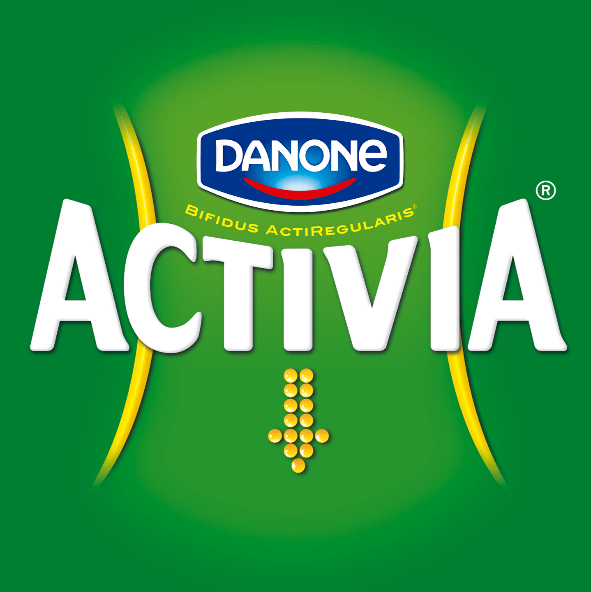
"What happens inside
can be seen on the outside"
You are a teapot
What happens inside, stays inside.
Lowering stress level
Be prepared
Check the room before.
Know your intro and outro.
Be protected
People are not here for you.
Your content is your shield.
Feel the adrenaline rush
You'll enjoy it.
You'll want to do it again.
DIY Experience
Record yourself
Use your smartphone.
Talk to the camera.
Watch yourself
Stop touching things
Stop moving
Listen to yourself
Remove verbal noises
Add silences
See
you
next time?tim@
algolia
.comAlgolia Speaker Program
Tim Carry
@pixelastic